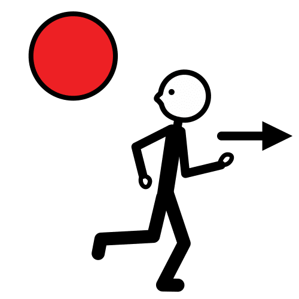
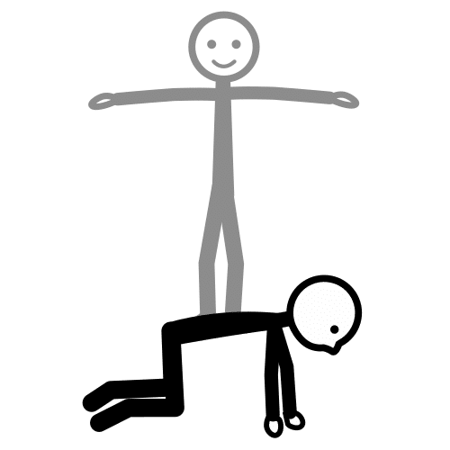
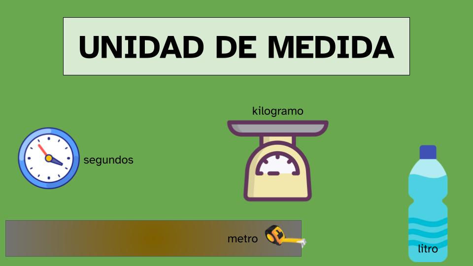
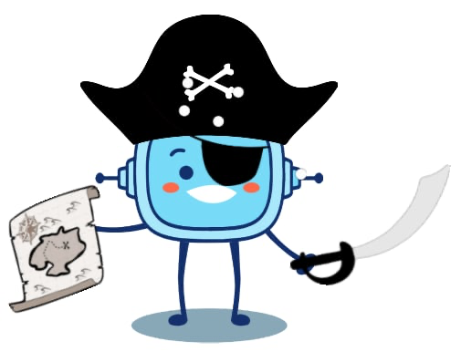
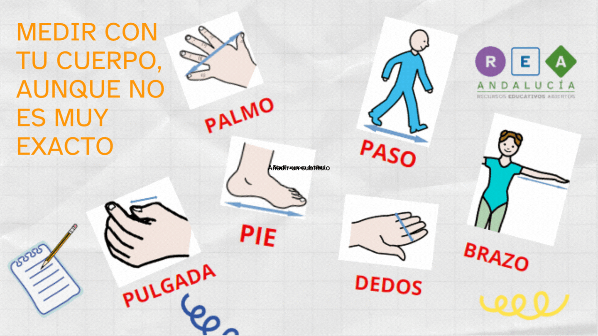

Encontrar el significado de un mensaje desconocido.
Ejemplo:
El pirata descifró el mapa del tesoro.
Huir

Definición:
Alejarse rápidamente de un lugar, de una persona, de un animal o de un a cosa por miedo o para evitar un daño o molestia.
Ejemplo:
Los gatos huyeron por la ventana.
Rol

Definición:
Papel o función que alguien o algo representa o desempeña, por voluntad propia o por imposición.
Ejemplo:
El rol de base en gimnasia acrobática es muy cansado.
Unidad de medida

Definición:
Cantidad de algo para medir una magnitud.
Ejemplo:
Normalmente usamos el litro como unidad de medida del volumen.
1. La historia del tesoro

Después de mucho tiempo buscando el tesoro más valioso de todos los mares, por
fin en el s. XVIII ¡Lo conseguimos!
Ohhhh!!! Barco a la vista! La Carabela de los Siete Mares, el barco del Pirata Rétor el Tuerto.
¡Huyamos!
Esconder el tesoro es lo mejor. Pero no se puede olvidar dónde estará…
¿Y si lo escribimos en algún lugar para ayudarnos a encontrarlo?
Pero sería buena idea que usemos un nuevo lenguaje para que solo nuestros amigos de clase lo entiendan…
¿Usamos el Sistema Métrico Decimal?
Y es que los piratas de la Carabela de los Siete Mares con el pirata Rétor el Tuerto al mando, sólo usan como medidas sus manos y pies…
Así, si descubren nuestro diario no sabrán descifrarlo.
Para que no se nos olviden los pasos que estamos siguiendo y esconder el tesoro, utilizaremos nuestro diario de abordo.
¿Os atrevéis a elaborarlo?
Será un viaje peligroso, tendremos que tener mucho cuidado y saber utilizar muy bien este nuevo lenguaje, además de construir nuestros propios instrumentos de medida.
¡¡Ánimo mis piratas!! Necesitamos vuestra ayuda.
Definición: Encontrar el significado de un mensaje desconocido. Ejemplo: El pirata descifró el mapa del tesoro.
Lectura facilitada
Después de mucho tiempo buscando el tesoro.
El tesoro más valioso de todos los mares
encontramos el tesoro en el siglo XVIII.
El siglo XVIII se lee el siglo dieciocho.
Hemos visto un barco.
La Carabela de los Siete Mares es el barco del Pirata Rétor el Tuerto.
Huyamos del Pirata Rétor el Tuerto.
Esconderemos el tesoro.
Para recordar el sitio
dónde está el tesoro escondido
lo escribiremos en algún lugar.
Tenemos una buena idea
usaremos un nuevo lenguaje
para que nuestros amigos de clase lo entiendan.
¿Usamos el Sistema Métrico Decimal?
Y es que los piratas de la Carabela de los Siete Mares
con el pirata Rétor el Tuerto al mando,
usan como medidas sus manos y pies.
Si descubren nuestro diario
ellos no sabrán descifrarlo.
Para recordar los pasos
que seguimos
y esconder el tesoro
utilizaremos nuestro diario de abordo.
¿Queréis elaborar el diaro de abordo?
Es un viaje peligroso.
Nosotros tendremos mucho cuidado
para utilizar muy bien este nuevo lenguaje.
Y construiremos nuestros propios instrumentos de medida.
¡Ánimo mis piratas|
Necesitamos vuestra ayuda.
2. Durante esta aventura aprenderás a...
A medir y preparar tus propios instrumentos de medida, lo vamos a pasar genial y vamos a ser capaces de:

Lectura facilitada
En este proyecto vamos a:
Medir con diferentes instrumentos de medida.
Preparar nuestros propios instrumentos de medida.
Pasadlo genial.
Y aprenderemos a:
Fabricar nuestros propios instrumentos de medida, en la Retorfactory.
Interpretar instrucciones para resolver problemas.
Seguir instrucciones de modo organizado para resolver problemas.
Trabajar en equipo.
Colaborar en equipo.
Respetar el rol de cada miembro del equipo.
Medir con tu cuerpo, aunque no es muy exacto.
Conocer las unidades de medida convencionales, el metro, sus múltiplos y submúltiplos.
Jugando aprendemos
Seguro que en muchas ocaciones has jugado con tus amigos y amigas a las carreras y te habrás preguntado quién de vosotros y vosotras
ha recorrido más distancia.
Si aprendemos a medir y a comparar ....podréis inventaros otros juegos.
En esta aventura, medirás, compararás, anotarás, ... pero lo más importante es que te diviertas.